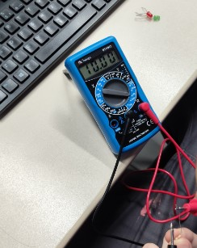

Controle de Iluminação
LDR com a montágem física no ARDUÍNO
Exemplo de código C++ no IDE ARDUÌNO
Filmagem do Controle de Iluminação Funcionando
Foto das Medidas Realizadas com o Multímetro

Explicação
As medições do resistor de 10k que é representado pelas cores preto, marrom e laranja.
Print de Tela da Ligação do LDR e LEDs no Tinkercad